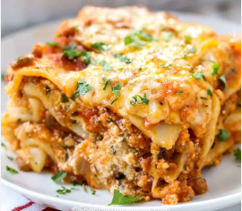

Lasagna Recipe
Home
Lasagna picture
Lasagna's history traces back to ancient times with Greek "laganon" and Roman "lasanum," evolving into the layered pasta dish known today in Naples, Italy, during the Middle Ages, with the first recorded recipe appearing in a 14th-century English cookbook. While early versions lacked tomatoes, the dish transformed significantly over centuries, particularly in Italy, becoming a beloved comfort food with numerous regional variations.
- lasagna noodles
- 1/2 pound ground pork
- 1/2 pound lean ground beef
- 1/2 pound minced onions
- 1 (8 ounce) can crushed tomatoes
- 1 (8 ounce) can tomato sauce
- Sugar
- Cheese
- Eggs
- Cook the meat: Cook the ground meat in a skillet until browned and crumbly. Add the onion and continue cooking until it's translucent. Stir in the canned tomato products, half of the parsley, garlic, basil, 1.5 teaspoons of salt, oregano, and sugar.
- Cook the noodles: Boil the lasagna noodles in lightly salted water until they're al dente.
- Make the cheese layer: Mix cottage cheese, Parmesan cheese, eggs, the remaining parsley, the remaining salt, and pepper in a bowl.
- Assemble the lasagna: Layer the ingredients according to the recipe (starting with sauce and ending with mozzarella) until the lasagna is assembled.
- Bake the lasagna: Cover with foil and bake in the preheated oven for about half an hour. Remove the foil and continue baking until the top is golden brown.